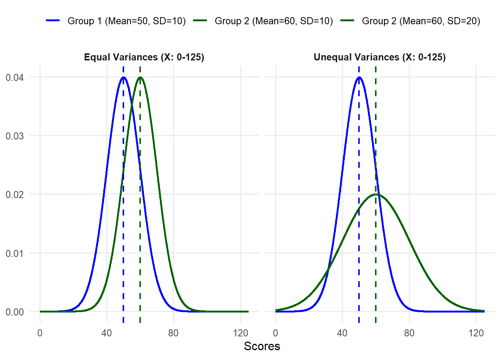

9 Chapter 9
Analyzing Differences Between Two Groups
Learning Objectives
By the end of this chapter, you will be able to:
Identify and differentiate between different types of tests to compare two groups, understanding their appropriate applications based on the nature of the data and comparisons being made.
Understand differences between parametric and nonparametric tests.
Explain the logic behind conducting independent - and related-samples t tests on continuous variables, including verifying assumptions, calculating the test statistic, and interpreting results within the context of hypothesis testing.
Apply the Mann-Whitney \(U\) test and Wilcoxon’s Matched-Pairs Signed-Ranks Test, demonstrating an understanding of their logic, appropriate use cases, and result interpretation.
Evaluate the practical significance of statistical results using measures such as Cohen’s \(d\) and eta-squared, providing context for the findings of t test analyses.
In the previous chapter, we explored the one-sample \(t\) test, a method used to compare a single group’s mean to a known population mean. This gave us the foundation for understanding how \(t\) tests work and their role in hypothesis testing. Now, we are moving on to explore additional types of \(t\) tests to compare two groups. Before diving into the details of the independent-samples \(t\) test, which is commonly used in educational research, let’s take a brief look at three types of \(t\) tests. These include the one-sample \(t\) test (covered in chapter 8), two independent-samples \(t\) test, and two related-samples \(t\) test, each tailored to different types of comparisons. Understanding the distinctions between these tests will help clarify when and how to use them effectively.
9.1 Types of \(t\) Tests
All three types of t tests involve comparing the values of a variable from one group of individuals to something else – and that something else tells you what kind of t test you should use. To explain the three tests, imagine that you have a class of third grade students, and you have a list of each student’s reading achievement scores. The following table explains how you might analyze those scores with each type of t test, depending on what you’re comparing them to.
| What to Compare | T-Test Used | Example |
|---|---|---|
| One single number | One-sample t test | You want to see if this group’s scores are, on average, significantly different from the state average for reading achievement scores. |
| A different group’s scores on the same variable | Two-independent-samples t test | You want to compare this group’s reading achievement scores to those from another third-grade class. |
| The same group’s scores on a different variable or at a different time |
Two related-samples t test | You want to compare this group’s reading scores to their math achievement scores, to see if their achievement levels are different across the two subjects. OR You want to compare this group’s reading scores after third grade to the same group’s reading scores after fourth grade, to see if they change over time. |
Now, we will provide a very brief overview of each type.
9.1.1 One-sample t test
This should be very familiar since we just learned it in the last chapter. You use this t test if you know the population mean (\(\mu\)), but you do not know the population standard deviation (\(\sigma\)). You are trying to find out if your sample mean (\(\bar{X}\)) is significantly different from a known population mean. To run this analysis, we will use only one continuous variable or column of data – each individual in the group has one value or score for the variable of interest.
9.1.2 Two-independent-samples t test
Commonly in practice, you do not know a population mean to use as a comparison point. You are instead comparing sets of numbers obtained from two separate groups in order to draw inferences about their populations. Maybe you have two groups of students, one of which received some kind of intervention, and you want to compare end-of-year achievement scores between them. You might want to know if female college students have higher GPAs than male students. This time, your dataset will need two columns to run the test: one to indicate which group the individual is in, and one with their value for the dependent variable.
9.2 Overview of the Two-Independent-Samples t Test
As we did when learning about the one-sample t test, let’s again walk through an example from educational research. Similar to the previous example, the teacher is now concerned if her class average of English Language Arts (ELA) scores (\(\bar{X} = 425.26, SD = 44.99\)) is significantly different from another class of third graders whose teacher joined the pilot implementation of a new reading intervention. When the result was returned the class average of the fellow teacher was 440 with a SD of 35. Are these two averages significantly different? Let’s find out.
Similar to the previous one-sample t test example, we will complete four steps of hypothesis testing.
9.2.1 Step 1: Determine the null and alternative hypotheses.
With a one-sample test, the null hypothesis states there is no difference between the sample mean and the population mean. We are now comparing the means of two independent samples, to determine statistically if their population means are identical or different. So, the null hypothesis about population means is that there is no difference between the population means of the two groups. The way we indicate is that one population mean (\(\mu_1\) for Group 1) minus the other (\(\mu_2\) for Group 2) is zero.
\[ H_0: \mu_1− \mu_2=0 \]
Therefore, the alternative hypothesis is that there is a difference between the two groups:
\[ H_A: \mu_1− \mu_2\ne 0 \]
Note that this is the alternative hypothesis for a two-sided or two-tailed test. We are not assuming that one mean is larger than the other, just that they are different. If you had reason to believe that one group mean would be larger than the other, your alternative hypothesis would be:
\[ H_A: \mu_1 > \mu_2 \]
,
or
\[ H_A: \mu_1 < \mu_2 \]
9.2.2 Step 2: Set the criteria for a decision.
The next step in testing the null hypothesis is to set the criteria for a decision: how much of a difference is significant enough that we can conclude it is not only due to random chance? We decide that \(\alpha = 0.05\) as usual, but the degrees of freedom are slightly different for an independent-samples t test compared to a one-sample t test. This time, we must subtract one from each group, so \(df = (n_1 − 1)+(n_2 − 1) = n_1 + n_2−2 = N - 2\), where \(n_1\) and \(n_2\) refer to the sample size of Group 1 and Group 2, respectively, and \(N\) refers to the total number of subjects in both groups combined.
Flip to the Critical Values of \(t\) Distribution Table at the back of the book like before, looking for the intersection between your alpha level and your degrees of freedom to find the critical value. For our example, both groups have a sample size of \(35\) so the \(df = 70 - 2 = 68\). Since we don’t have \(df = 68\), round down to \(50\) df to be conservative. The critical \(t\) value associated with 50 df at \(\alpha = 0.05\) for a two-tailed test is \(\pm2.009\).
#| label: fig-9.2
#| fig-cap: "t-distribution with two-tailed rejection regions ($\alpha = 0.05$)"
#| fig-width: 8
#| fig-height: 4.6
#| warning: false
#| message: false
#| echo: false
library(ggplot2)
# --- Settings (edit these as needed) ---
df <- 49
alpha <- 0.05
tcrit <- qt(1 - alpha/2, df)
x <- seq(-4, 4, length.out = 2000)
curve_df <- data.frame(x = x, y = dt(x, df))
ggplot(curve_df, aes(x, y)) +
# T distribution line
geom_line(aes(color = "T-Distribution"), linewidth = 1) +
# Rejection regions (tails only)
geom_area(
data = subset(curve_df, x <= -tcrit),
aes(fill = "Rejection Region"),
alpha = 0.3
) +
geom_area(
data = subset(curve_df, x >= tcrit),
aes(fill = "Rejection Region"),
alpha = 0.3
) +
# Critical value lines
geom_vline(xintercept = -tcrit, linetype = "dashed", color = "red") +
geom_vline(xintercept = tcrit, linetype = "dashed", color = "red") +
# Null line
geom_vline(
aes(linetype = "Null Hypothesis (Mean Diff = 0)"),
xintercept = 0,
color = "black"
) +
scale_color_manual(values = c("T-Distribution" = "blue"), name = NULL) +
scale_fill_manual(values = c("Rejection Region" = "red"), name = NULL) +
scale_linetype_manual(
values = c("Null Hypothesis (Mean Diff = 0)" = "dashed"),
name = NULL
) +
labs(
x = "Standardized Difference in Sample Means (t)",
y = "Density"
) +
theme_minimal(base_size = 12) +
theme(
legend.position = c(0.72, 0.62),
legend.background = element_rect(fill = "white", color = "grey80")
)Warning: `geom_vline()`: Ignoring `mapping` because `xintercept` was provided.Warning: No shared levels found between `names(values)` of the manual scale and the
data's linetype values.
9.2.3 Step 3: Check assumptions and compute the test statistic.
The third step has a few parts. First, we verify that our data meet the assumptions required for this method of analysis, and then we calculate the test statistic. The assumptions for an independent-samples t test are:
Normality: The dependent variable is approximately normally distributed (as before, this requirement is less important if n > 30).
Random sampling: You are using a random sample of independent observations.
Independence: The scores are independent of one another.
Equal variances: The variances of the dependent variable are equal across two groups or populations being compared.
Equal variance is new, but it is important to keep in mind for this method. Remember earlier in the book when we said means are important and so is standard deviation (or variance, which is the same basic concept)? Here is one place where that comes into play. Imagine you are comparing scores of two groups on the same test. In one group, all scores are tightly clustered near the mean. In the other group, they are completely spread out with a much wider range than compared to the first group. It is harder to make a solid conclusion about the differences between two group means when the distributions are completely different.
#| label: fig-9.3
#| fig-cap: "Normal distributions with equal vs. unequal variances"
#| fig-width: 8
#| fig-height: 4.6
#| warning: false
#| message: false
#| echo: false
library(ggplot2)
# ---- Parameters from the figure ----
x_min <- 0
x_max <- 125
x <- seq(x_min, x_max, length.out = 2000)
params <- data.frame(
scenario = c("Equal Variances (X: 0-125)", "Equal Variances (X: 0-125)",
"Unequal Variances (X: 0-125)", "Unequal Variances (X: 0-125)"),
group = c("Group 1", "Group 2", "Group 1", "Group 2"),
mean = c(50, 60, 50, 60),
sd = c(10, 10, 10, 20),
color = c("blue", "darkgreen", "blue", "darkgreen")
)
# Build curve data
curve_df <- do.call(rbind, lapply(seq_len(nrow(params)), function(i){
p <- params[i, ]
data.frame(
x = x,
y = dnorm(x, mean = p$mean, sd = p$sd),
scenario = p$scenario,
group = sprintf("%s (Mean=%d, SD=%d)", p$group, p$mean, p$sd),
mean = p$mean,
color = p$color
)
}))
# Means for vlines/legend
means_df <- unique(curve_df[, c("scenario", "group", "mean", "color")])
ggplot(curve_df, aes(x = x, y = y, color = group)) +
geom_line(linewidth = 1) +
geom_vline(
data = means_df,
aes(xintercept = mean, color = group),
linetype = "dashed",
linewidth = 0.8,
show.legend = FALSE
) +
facet_wrap(~scenario, nrow = 1) +
coord_cartesian(xlim = c(x_min, x_max)) +
labs(x = "Scores", y = NULL, color = NULL) +
scale_color_manual(
values = setNames(means_df$color, means_df$group)
) +
theme_minimal(base_size = 12) +
theme(
legend.position = "top",
panel.grid.minor = element_blank(),
strip.text = element_text(face = "bold")
)
When analyzing data from two groups, it is essential to compute and evaluate the size of variance for each group. This helps in understanding the spread of the data and determining if the variances are similar or different. Drawing histograms for each group is particularly useful for visually inspecting the data spread and identifying any noticeable differences between two distributions.
Levene’s Test for Assessing Equal Variances
Levene’s Test is a statistical procedure used to assess whether the variances of a dependent variable are equal across different groups. This test is typically performed before conducting analyses that assume equal variances, such as t tests or ANOVA, to determine if this assumption holds. We won’t show you how to calculate Levene’s Test by hand because statistical software packages will do this for you.
However, the important thing to remember is that if the result of Levene’s Test is statistically significant \((p < .05)\), your variances are not equal. If your variances are not equal, you should consider using a different test that we will learn later or, at minimum, report the statistical results adjusted for unequal variances between two groups, which is provided by most software packages as well. If your Levene’s Test results are not statistically significant \((p > .05)\), your group variances are considered equal.
9.2.4 Step 4a: Find the p value.
Next, we calculate the test statistic. We are going to show you the formula first, but please don’t panic. It is not as bad as it seems.
\[ t = \frac{(\bar{X}_1-\bar{X}_2)-(\mu_1-\mu_2)}{\sqrt{s_p^2(\frac{1}{n_1}+\frac{1}{n_2})}} \]
Let’s take that a little at a time, starting with the numerator. The first part is the difference between group means in your sample. Then we are comparing that to the expected difference between group means in the population (i.e., the mean differences specified in the null hypothesis). Look back at the null hypothesis for this type of test. What is the expected difference between group means in the population? Zero! For practical purposes, the top half of the fraction is just the difference between group means.
Do you remember what was in the denominator of the t statistic for a one-sample t test? It was the standard error, or the sample standard deviation divided by the square root of the sample size. This denominator is more complicated because we have two separate groups. Under the null hypothesis, we assume that both sample groups came from the same population, but most likely the standard errors are not exactly the same. So which sample variance do we use as an estimate for the population variance? The optimal solution is to make full use of the variance estimates from both samples to obtain a more accurate estimate of the population variance.
There is another new value in the denominator, s2p, s p 2 ,
which represents the pooled sample variance. The formula for this looks very complicated, but it is just a way of weighting the two sample variances by the sample size. If one group is bigger than the other, their sample variance is weighted more heavily by this formula. If you notice this looks a little different from what you might find elsewhere, that is because we are being more specific about how you get to the degrees of freedom, with n – 1.
\[ s_p^2 = \frac{(n_1 − 1)s_1^2 + (n_2 − 1)s_2^2}{(n_1+ n_2)−2} \]
What does all that mean? You are multiplying the sample variance for group one by the degrees of freedom for group one and adding that to the same thing for group two. Then you are dividing the outcome by the degrees of freedom for the whole test. In our example, the sample size of each group is 35. Thus,
\[ s_p^2 = \frac{(34)s_1^2 + (34)s_2^2}{68} \]
Now you have a measure of sample variance that you can use for the whole combined sample of both groups. If both groups have the same sample size, like our example, there is a much simpler version of the formula you can use.
\[ s_p^2 = \frac{s_1^2 + s_2^2}{2} \]
In our example, \(s_1^2 = (44.99)^2\), and \(s_2^2 = (35)^2\). Let’s plug in these values and compute the \(s_p^2\)
\[ s_p^2 = \frac{s_1^2 + s_2^2}{2} = \frac{(44.99)^2 + (35)^2}{2} = 1624.55 \]
Either way, once you have the value for \(s_p^2\), you bring that back to the \(t\) statistic formula and do what we always do: standard deviation divided by the square root of the sample size. It just looks more complicated when we have two separate sample sizes, and because this formula starts with sample variance and then takes the square root, rather than starting with standard deviation, which is already the square root of the variance.
\[ t = \frac{(\bar{X}_1-\bar{X}_2)-(\mu_1-\mu_2)}{\sqrt{s_p^2(\frac{1}{n_1}+\frac{1}{n_2})}} = \frac{(425.26−440)−0}{\sqrt{1624.55(\frac{1}{35}+\frac{1}{35})}} = \frac{-14.74}{9.634} = -1.53 \]
If you are completely lost, try not to get too caught up in the math and focus on the concept. We are finding the difference between the two group means and dividing it by the standard error for the difference. It is just more complicated to calculate this version of standard error than it has been for other tests. The good news is that statistical software programs will do the math for you.
#| label: fig-9.4
#| fig-cap: "Two-tailed t-test with critical values $\pm2.009$"
#| fig-width: 8
#| fig-height: 4.6
#| warning: false
#| message: false
#| echo: false
library(ggplot2)
# --- Parameters ---
df <- 49
tcrit <- 2.009
t_stat <- -1.53
# Curve data
x <- seq(-4, 4, length.out = 2000)
curve_df <- data.frame(
x = x,
y = dt(x, df)
)
# Tail shading data
left_tail <- subset(curve_df, x <= -tcrit)
right_tail <- subset(curve_df, x >= tcrit)
ggplot(curve_df, aes(x, y)) +
# t distribution curve
geom_line(aes(color = "t-distribution"), linewidth = 1) +
# rejection regions
geom_area(data = left_tail,
aes(fill = "Rejection Region"),
alpha = 0.3) +
geom_area(data = right_tail,
aes(fill = "Rejection Region"),
alpha = 0.3) +
# critical value lines
geom_vline(aes(linetype = "Critical values: ±2.009"),
xintercept = -tcrit,
color = "black",
linewidth = 0.9) +
geom_vline(aes(linetype = "Critical values: ±2.009"),
xintercept = tcrit,
color = "black",
linewidth = 0.9) +
# test statistic line
geom_vline(aes(color = "Test Statistic"),
xintercept = t_stat,
linewidth = 1) +
# label for test statistic
annotate("label",
x = t_stat,
y = 0.02,
label = "-1.53",
size = 3,
label.size = 0.25,
fill = "white") +
scale_color_manual(
values = c(
"t-distribution" = "blue",
"Test Statistic" = "darkgreen"
),
name = NULL
) +
scale_fill_manual(
values = c("Rejection Region" = "red"),
name = NULL
) +
scale_linetype_manual(
values = c("Critical values: ±2.009" = "dashed"),
name = NULL
) +
labs(
x = "t-value",
y = "Density"
) +
scale_x_continuous(expand = c(0, 0)) +
scale_y_continuous(expand = c(0, 0)) +
coord_cartesian(xlim = c(-4, 4)) +
theme_minimal(base_size = 12) +
theme(
legend.position = c(0.78, 0.80),
legend.background = element_rect(fill = "white", color = "grey80"),
panel.grid.minor = element_blank()
)Warning: `geom_vline()`: Ignoring `mapping` because `xintercept` was provided.
`geom_vline()`: Ignoring `mapping` because `xintercept` was provided.
`geom_vline()`: Ignoring `mapping` because `xintercept` was provided.Warning in annotate("label", x = t_stat, y = 0.02, label = "-1.53", size = 3, :
Ignoring unknown parameters: `label.size`Warning: No shared levels found between `names(values)` of the manual scale and the
data's linetype values.
The last step in testing a hypothesis is more straightforward: compare the value of the \(t\) statistic you just calculated to the critical value you identified in (step-two?). If the \(t\) statistic is larger, meaning farther out from the center of the distribution in either direction, then a significant difference exists between the groups.
In this example, the observed \(t\) value is \(= -1.53\) which is greater than the lower critical \(t\) value of \(-2.009\). Therefore, we fail to reject the null hypothesis. The actual \(p\) value for \(t = -1.53\) in a two-tail test is \(0.131\).